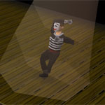

")
Evénements aléatoires
Introduction | Fonctionnement des événements aléatoires | Types d'événements aléatoires | Récompenses | Mise à jour des événements aléatoires
Introduction
En parcourant RuneScape, vous pouvez parfois vivre ou être témoin d'événements étranges et inattendus. Les événements aléatoires se caractérisent par l'apparition d'un personnage ou d'un animal insolite. Cette créature vous demandera d'accomplir une petite mission ou de résoudre une énigme. Vous n'en aurez pas pour longtemps et une récompense vous attend ! Ces événements peuvent se produire n'importe quand et n'importe où, alors gardez la tête sur les épaules !
Fonctionnement des événements aléatoires
Au cours d'un événement aléatoire, vous serez téléporté dans une zone inhabituelle, qui peut se trouver dans RuneScape ou dans une dimension parallèle. Vous ne pourrez quitter cette zone qu'après avoir tenté d'accomplir votre mission. Si vous réussissez, vous serez reconduit à votre point de départ. Si vous échouez, vous serez téléporté aléatoirement. Ne vous inquiétez pas : vous ne serez jamais téléporté dans une zone dangereuse.
Les événements aléatoires se produisent à intervalle régulier mais plus vous gagnerez d'événements, moins vous serez amené à en faire.
Types d'événements aléatoires

L'apiculteur
L'apiculteur a besoin d'aide : il vient d'acheter une nouvelle ruche qu'il ne parvient pas à construire. Montrez-lui comment assembler les quatre parties de sa ruche. Si vous échouez, préparez-vous à affronter un essaim d'abeilles énervées.
Le coffre de cap'taine Arnav
Les pirates sont loin d'être célèbres pour leur générosité. Mais le cap'taine Arnav est différent. Pourquoi ? Sa vie solitaire sur son île déserte lui a peut-être donné le goût du partage. Ou il a simplement passé trop de temps au soleil... En tout cas, si vous l'aidez à ouvrir son coffre, il sera ravi de vous remercier...
L'administrateur
Il existe trois « administrateurs » : Niles, Miles et Giles. Ils adorent faire subir aux aventuriers des tests d'identification apparemment inutiles. Ça a l'air de les rendre heureux... Mieux vaut ne pas chercher à comprendre !
Le démon instructeur
« Allez, soldat ! Faites-moi des séries d'abdos ! Plus vite que ça ! Je veux voir ce que vous avez dans le ventre ! » Le démon instructeur a la ferme intention de vous apprendre la discipline et vous n'y échapperez pas. Séries de pompes, de sauts en extension, d'abdos... ce démon n'est pas facilement impressionnable, il va falloir travailler dur. Mais si vous lui obéissez, une récompense vous attend.
Bob le maléfique
Bob le maléfique est toujours à la recherche d'esclaves humains pour le servir sur son île mystérieuse, ScapeRune. Il n'hésitera pas à vous kidnapper et à vous réduire en esclavage. Le seul moyen de vous échapper est d'attendre que Bob le chat dorme comme un loir... mais pour cela, il faut d'abord qu'il mange un morceau.
La jumelle diabolique
La vie est un enfer quand on a une sœur jumelle diabolique, et Molly pourra vous en parler... Elle a réussi à capturer sa cruelle sœur mais celle-ci a utilisé sa magie pour entraîner de pauvres innocents avec elle, sous les verrous ! Molly vous sera reconnaissante si vous extirpez sa sœur de la foule des innocents.
Le forestier farfelu
Ce drôle de type adore les faisans. Mais il préfère que quelqu'un d'autre se charge de les chasser. N'essayez pas de lui amener d'autres volatiles, il sait ce qu'il veut. Pour une raison inconnue de tous, ce qui lui importe particulièrement, c'est le nombre de plume sur le postérieur de ces bestioles. Pour le satisfaire, contentez-vous de lui apporter ce qu'il veut.
Le baiser de la grenouille
Tout le monde sait qu'un baiser peut transformer une grenouille en prince (ou, en l'occurrence, en princesse). Cette perspective ne vous fait peut-être pas envie. En tout cas, ceux d'entre vous qui aideront cette grenouille seront récompensés. Alors, si vous croisez une grenouille qui parle, n'oubliez pas de vous faire tout beau ou toute belle...
Le fossoyeur
Ce fossoyeur est myope comme une taupe. S'il avait été capable de lire les inscriptions sur les bornes funéraires, il n'aurait peut-être pas placé ces cinq cercueils dans les mauvaises tombes. Aidez-le à remettre de l'ordre dans son cimetière. Un jeu d'enfant, hein ?
Objets trouvés
Si vous atterrissez au bureau des objets trouvés, vous avez sûrement dérivé dans une dimension abyssale. C'est une sorte de royaume parallèle où échoue tout ce qui s'est égaré. N'ayez crainte : vous devriez pouvoir retourner à RuneScape sans trop de difficulté.
Le labyrinthe
Allons droit au but : ce labyrinthe n'est pas aussi difficile qu'il n'y paraît. Un vieil homme mystérieux vous donnera de précieux conseils. Pour gagner une récompense, trouvez le chemin pour vous rendre au centre du labyrinthe. Plus vous serez rapide, plus la récompenses sera intéressante !

Le mime
Ma mère m'a toujours dit : « Mon enfant, si un jour tu te retrouves sur scène contre ton gré, et que tu vois un mime gesticuler à tes côtés, imite-le et tout se passera bien. » Et elle avait raison. Il suffit de l'observer et de reproduire son numéro. Rien de plus facile !
Le pilori
Parfois, la fortune vous joue des tours. Ainsi, certains aventuriers peuvent être mis au pilori, une sorte de cellule individuelle. Il est alors tentant pour le badaud de vous jeter des tomates pourries à la figure... Pour retrouver la liberté, il vous suffit de trouver la bonne clé.
Le flipper
Ce jeu de flipper géant ne devrait pas vous poser de problème. Ouvrez l'œil et marquez les piliers de jeu clignotants. Après avoir correctement marqué dix piliers, vous serez libre. Oh, si vous voulez éviter les ennuis, n'énervez pas les trolls qui gardent la sortie !
Pete des prisons
Pauvre Pete ! Prisonnier depuis des années dans ScapeRune ! Et maintenant, vous voilà également pris au piège dans ce monde où tout est inversé ! Pour libérer Pete et retrouver votre liberté, il vous suffit de trouver la clé de la prison. Elle se trouve peut-être à l'intérieur de ces étranges ballons en forme d'animaux...
Le maître du jeu
Bienvenue sur le plateau RuneScape de notre grand jeu : Trouvez l'intrus ! Vous avez eu la chance d'être sélectionné pour jouer avec nous. Pour être l'heureux gagnant du jour, il vous suffit de répondre correctement à quatre questions consécutives. Trouvez l'intrus, c'est un jeu d'enfant ! Vous connaissez les règles, alors c'est parti !
La vendeuse de sandwichs
Un petit creux ? C'est bien ce qui me semblait. La vendeuse de sandwichs veut s'assurer que les aventuriers ne manquent de rien. Comme par enchantement, vous vous retrouverez dans sa boulangerie magique pour un petit encas. Ceci dit, elle a très mauvais caractère. Si vous touchez à ses petits plats sans sa permission, vous risquez de la fâcher !
Interro surprise
Le vieil homme mystérieux est convaincu que vous avez besoin d'un petit exercice intellectuel, et vous n'y couperez pas ! Installez-vous donc dans l'étrange salle de classe de M. Mordaut. Préparez-vous à subir un test de reconnaissance de formes. Concentrez-vous et tout ira bien.
Récompenses
Pour chaque événement aléatoire accompli (à l'exception du Labyrinthe), vous remporterez une boîte à cadeaux. Vous pourrez choisir votre type de récompense parmi les nombreux objets qu'elle contient : pièces d'or, runes, charbon, essence, minerai, lingots, gemmes, herbes, graines et charmes et lampes d'expérience. Certaines boîtes contiennent en plus des points costume qu'Iffie, au magasin de Thessalia à Varrock, vous échangera contre des vêtements.
Mise à jour des événements aléatoires
Nous avons désactivé certains événements aléatoires car les personnages qui s'en occupaient ne sont plus. La plupart des gardes, par exemple, vivent aujourd'hui dans la vallée enchantée (accessible via les cercles des fées) et d'autres personnages un peu plus suspects, comme le capitaine Crochète, sont sous les verrous, à Port-Sarim. Mais vous croiserez toujours le Dr. Jekyll courant chez l'apothicaire de Varrock, dans une tentative désespérée de contrôler M. Hyde. Et lors de vos balades à Karamja, dans le sud de Brimhaven, vous pourrez toujours trouver sur votre chemin des plantes étranges aux fruits délicieux. Le nain ivre fera également quelques apparitions, titubant de-ci de-là. Si vous lui parlez et qu'il vous aime bien, il vous paiera sans doute un kebab et une bière.

Autres articles dans Guide du jeu
|
|
|
Aide supplémentaire Si cet article ne vous aide pas, les sections suivantes du site de RuneScape vous renseigneront peut-être davantage :
|
|